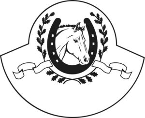

Trade Mark Journal No.2025/046 14 November 2025
WO0000001883068 (6,7,9,25,28,37,44)
Office of origin: Germany
Date of International Registration:16 September 2025
Date of designation in the UK:
16 September 2025

International priority date claimed: 18 March 2025
(Germany)
- Class 6
- Building and construction materials of metal; transportable buildings of metal; non-electric cables and wires of common metal; metal hardware; containers of metal for storage and transport; safes; tethering chains; hooks and chains of metal for stables and tack rooms; building materials and transportable buildings (of metal) for agricultural use, especially for keeping, breeding and grooming horses; fixed fences and mobile fence elements (of metal) for horses; mobile and stationary traps and walkers (of metal) for horses, consisting of fences, gates and doors; metal and steel structures for stable equipment, namely stable stalls, stable pen partitions, aisle partitions, aisle and stall grates, gates, posts and doors; stands [structures] of metal for horses; pasture fence gates and gate latches (of metal); windows of metal, window stops of metal, shutters of metal, window frames of metal, window latches of metal, roof lights (window flaps of metal); doors of metal, door frames, frames of metal, door latches of metal, door closers of metal, non-electric; horse shelters (of metal); horse boxes, stables, riding halls and round arenas, indoor and outdoor horse stalls and pasture huts for horses (of metal).
- Class 7
- Agricultural implements, other than hand-operated, harrows, riding arena levellers, riding arena drags.
- Class 9
- Recorded and downloadable media; podcasts; downloadable podcasts; downloadable multimedia files; electronic publications; downloadable electronic publications; software; downloadable software; software packages; mobile apps; downloadable mobile applications for data and information management; riding helmets, reflective clothing articles and clothing for the prevention of accidents in equestrian sports; electric control boxes; devices for the recording, evaluation and storage of data and adapted software; digital recordings; software for the recording, evaluation and storage of data; digital storage media.
- Class 25
- Clothing; footwear; headgear; scarves; gloves; stockings; hosiery; belts; handkerchiefs [clothing]; neckerchiefs.
- Class 28
- Gymnastic and sporting articles, in particular obstacles for horse jumping; games, toys, playthings (including for animals); toy animals.
- Class 37
- Construction services; installation work for paddocks, fences, horse stables, horse boxes, horse walkers and riding halls; repair services for paddocks, fences, horse stables, horse boxes, horse walkers and riding halls; construction of paddocks and fences; construction of horse stables, horse boxes, horse walkers and riding halls.
- Class 44
- Agricultural services, in particular advisory services in connection with the construction of stable facilities, stable stalls and outdoor facilities; recording, storage and evaluation of data in the context of horse breeding, horse keeping and veterinary medicine; veterinary advisory services.
Röwer & Rüb GmbH
Representative: Eisenführ Speiser Patentanwälte Rechtsanwälte PartGmbB, Am Kaffee-Quartier 3, 28217 Bremen, GERMANY